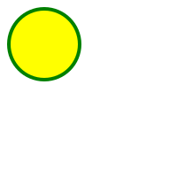

<!-- Criando uma TAG svg -na mão -->

<!-- SVG - atributos

    'cx' = posição do círculo no eixo x
    'cy' = posição do círculo no eixo y
    'r' = raio do círculo
    'stroke' = cor da borda do cículo
    'stroke-width' = largura da borda do círculo
    'fill' = preenchimento do conteúdo do círculo

    DOCS: https://developer.mozilla.org/pt-BR/search?q=svg
-->

<svg width="200" height="200">
    <circle 
        cx="50" 
        cy="50" 
        r="40" 
        stroke="green" 
        stroke-width="4" 
        fill="yellow" 
    />
</svg>

<!-- Pegando um arquivo .svg do projeto -->
